Monetizing with Gloebits
We want you to use gloebits and our Gloebit services in all your products. But before using them you want to know what gloebits are and what you and your customers will experience when using them. This page aims to explain.
What are gloebits?
Gloebits are a universal digital or virtual currency. Think of a digital version of an old arcade token where Gloebit is the token kiosk, and the arcade encompasses all websites, games and applications connected to the internet. Consumers purchase gloebits in bulk. Developers/merchants accept gloebits in return for goods and services. They can then spend those gloebit proceeds with other merchants, or sell their gloebits for a “real-world” currency which can then be withdrawn.
Using gloebits makes it simple and inexpensive to accept micro-transactions/payments, provide multiple payment processing options to your consumers, market to an international audience, and maximize the monetization of your game or application.
How are gloebits different from bitcoins?
Unlike Bitcoin and other crypto-currency alt-coins, gloebits are centrally managed by Gloebit. Because of this, Gloebit can ensure stability of value of gloebits, speed and security of transactions, regulatory compliance, confidentiality of transaction records, and a low, stable fee for transactions. Gloebit also provides a simple purchasing mechanism to acquire gloebits with which consumers are comfortable, a set of APIs for fast easy integration by developers, and a simple mechanism for merchants to cash out earnings. Gloebit even allows consumers to purchase with bitcoins and merchants to sell their gloebit proceeds for bitcoins, so you can have all the benefits that Gloebit provides, and remain open to the community of bitcoin advocates.
Consumer Experience
Consumers carry a universal gloebit balance around with them to all integrated applications.

Consumers can spend those gloebits without leaving your application.
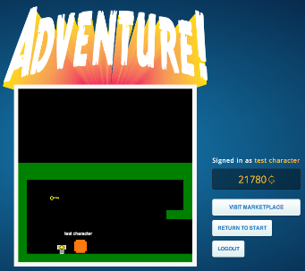 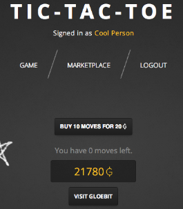If a consumer needs more gloebits, send them to us to top up their account. From the Gloebit website, users can purchase one of 5 packages of gloebits. We provide incentives for users to purchase more gloebits at one time, reducing payment processing costs, and passing those savings along to all users and developers.
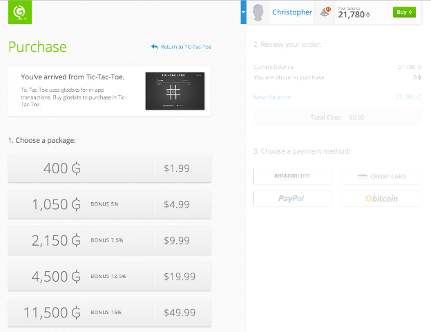Gloebit handles all non-gloebit payments from users. This simplifies application integration to a single purchase flow with gloebits, saving months of engineering work. Consumers have four payment options (credit card, Amazon, PayPal, bitcoin) and receive the benefit of all payment methods Gloebit adds in the future.
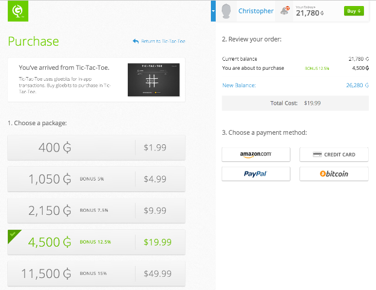 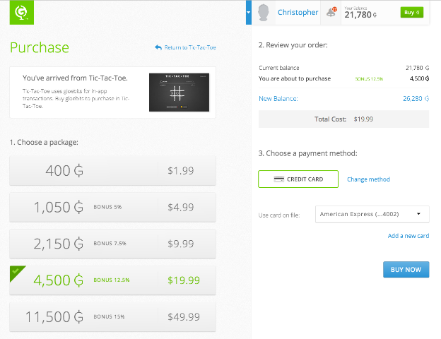After a user completes the purchase of Gloebits, the user is immediately directed back to the application the user arrived from.


Consumers can later review transactions from their transaction history page.
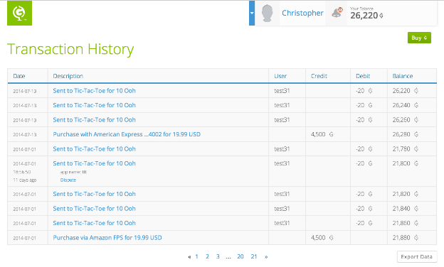Merchant Experience
Merchants price and sell their products in gloebits, receiving proceeds into their developer/merchant gloebit account.
 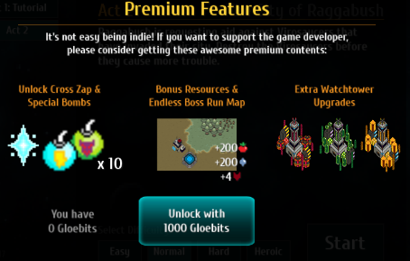
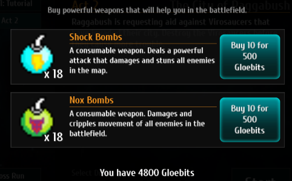
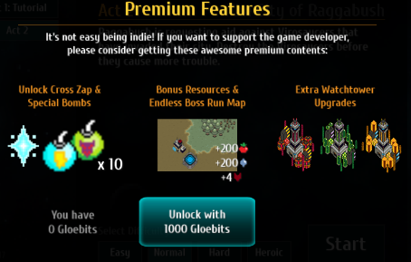
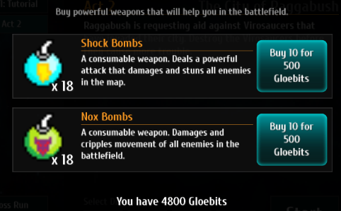
All transactions, including the 2% fees to Gloebit, are tracked and reported on the developer’s/merchant’s Transaction History page. This data is easily exportable to csv format.
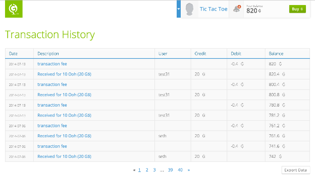Merchants can spend those gloebits, or sell them for USD or BTC. The current sale rate is G$250 per US$1.
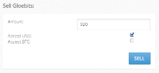 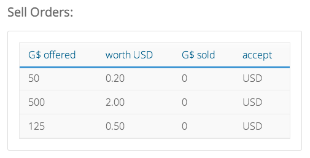Merchants can request a withdrawal of their USD or BTC balance. Currently, we use Coinbase & PayPal for cashouts.
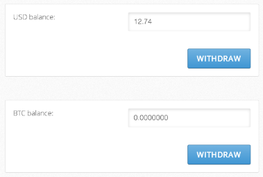User-to-User Experience
If you’d like to allow user-to-user transactions within your application, gloebits are the best way to do so. It enables small, trusted transactions. Gloebit can provide you with a revenue stream from user-to-user transaction fees.
Please contact us to discuss user-to-user transactions as it is not yet a part of our off-the-shelf offering.